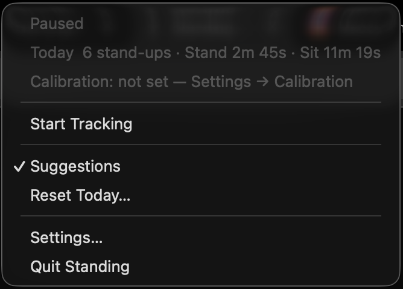
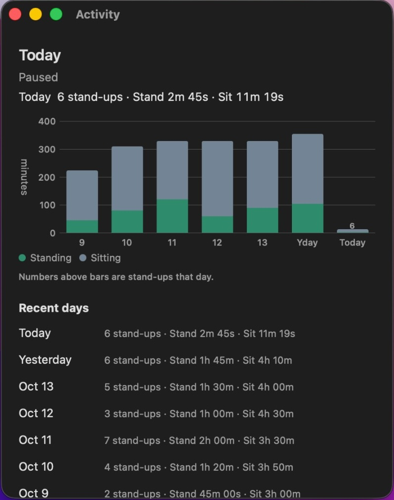
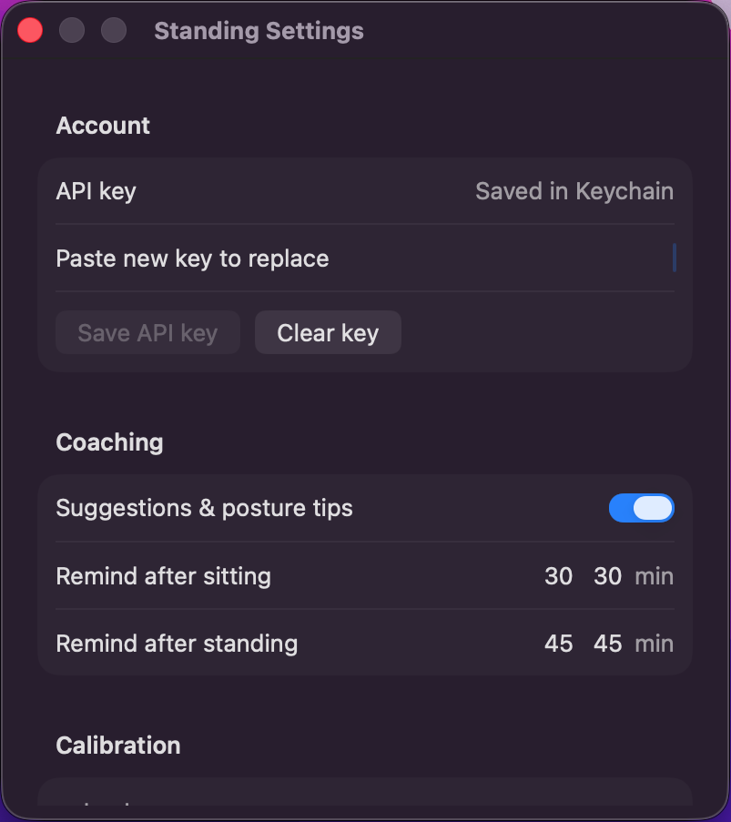

A quiet macOS menu bar app that watches your desk posture and nudges you when you’ve sat too long.
Webcam checks sit vs stand. No timer guessing.
Three steps. That is the whole product.
Menu, activity, and settings — what you’ll see day to day.
Status Sitting, standing, or paused — at a glance.
Suggestions & settings Toggle nudges or open Settings.

Today at a glance Stand-ups and sit vs stand time.
Pause / resume Stop AI checks for meetings without quitting.
Today’s summary Status, stand-ups, and sit vs stand time.
Recent days Scroll the week’s stand-ups and totals.

Week at a glance Standing vs sitting minutes for the last 7 days.
Your AI API key From console.typesafe.ai — stored in Keychain.
Calibrate once Snap sitting & standing references for AI.

Standing thresholds Remind after sitting or standing too long.
Uses vision AI on your webcam to tell sitting from standing — not timers or guesswork.
A small icon and streak time near the clock. Open the menu when you want a glance.
AI runs on motion or a slow heartbeat — never on every webcam frame. No motion, same posture — it waits instead of re-asking.
macOS notifications after you’ve sat or stood too long, plus simple posture tips.
Bring your own API key from console.typesafe.ai (saved in Keychain). Frames are checked when needed, not streamed all day.
Snap sitting and standing references so AI checks match how you actually work.
Apple may show an unverified-developer warning — Standing isn’t notarized yet. One-time only; after that it opens normally.
Camera and notification prompts are separate — allow those when macOS asks.